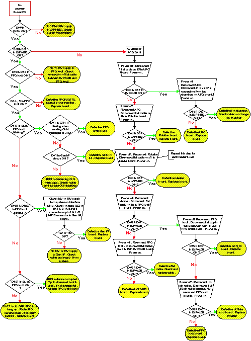

Proprietary to General Electric
Direction 5181166-800, Rev# 7
BrightSpeed Select Service Methods Adv
Proprietary to General Electric |
| Last Revised: | March 2007 |
JEDI software performs self-test at power up and continuously monitors the correct operation of its functions during application. Any malfunction is stored in the JEDI error log and reported to the system through a protocol that transports error code. Errors found can only be reported if the generator is powered on and live.
This document is to introduce the JEDI Generator with the following information:
Power-on self-tests LED indication.
List all the potential error codes that can be issued by JEDI Generator.
Provide error code explanation, potential cause and recommended action.
List of diagnostics aids and explanation of diagnostics.
There are different levels of tests and diagnostics implemented in the JEDI generator.
At power-up the PPC kV control performs its own initialization, checks its memory integrity (checksum of program and NVRAM) and starts the communication with its peripherals as well as the system. Communication is permanently checked afterwards. It then initializes the Rotation board and Heater board with their respective database parameters and loads PPC kV control FPGA. Eight LEDs (from DS17 to DS24) on PPC kV control board show the software status. During power-on, the Heater board and the Rotation board CPUs are initialized and check their memory integrity and hardware. If a problem is encountered, a PRD error is reported to the PPC kV control.
Under application mode the generator continuously monitors the correct operation of its functions. Faults are reported through an error code and associated message. Some are straightforward and convey the root cause. Refer to the recommended action in the error list and troubleshooting guide.
On the generator we can also perform test to check its functions independently.
heating function
rotation function
inverter gate command diagnostic
inverter in short circuit diagnostic
no load HV function diagnostics
Fan diagnostics
These tests are referred to as manual diagnostics or diagnostics. Diagnostics are usually implemented in the system console or in the service software (executed from the service laptop).
Application self tests and diagnostics generate errors. The error code structure described in this section applies to JEDI error detection and logging. The JEDI error log file can be accessed from the system through the system console or a laptop (JEDI error log upload functionality).
When an error is detected, it is sent to the system and is logged in parallel in the JEDI error log file. The file contains a maximum of sixty-four logs.
Each log shows the following structure:
Table 1: Error Log Structure
| Simplified error code | Generator Phase | Error Class | Error Code | Data associated with the error code | Number of occurrences | Date & time |
The fields are described in the following sections.
The simplified error code is a grouping of the JEDI error codes. This field gives a rapid understanding of which part of JEDI is faulty.
Table 2: Simplified Error Code Definitions
| Simplified Error Code | Description |
|---|---|
| 30 | Tube spits errors |
| 40 | Rotation errors |
| 50 | Heater errors |
| 60 | Exposure errors (HV inverter + mA measure + exposure control |
| 70 | Power supply errors (low voltage + DC bus) |
| 80 | Hardware errors (internal communications + cables) |
| 90 | Application errors (saved RAM + software) |
| 100 | External communication errors |
| 110 | Thermal errors |
| 120 | Manipulation Errors |
| 130 | Grid Errors / Not used on Jedi60DC. |
| 140 | Tube Switch Errors / Not used on Jedi60DC |
| 10 | Rotation warnings (engineering use) |
| 20 | Heater warnings (engineering use) |
| 25 | LVPS warnings (engineering use) |
| 27 | Application warnings (mainly saved RAM battery change) |
The generator phase field contains the state of the generator when the error occurred.
Table 3: Generator Phase Definitions
| Generator Phase | Description |
|---|---|
| 0 | idle: entered in diagnostic mode |
| 1 | powered up; waiting for configuration |
| 2 | Stand by: configuration completed, waiting for a preparation command |
| 3 | Preparation in progress: JEDI gets ready to take X-rays |
| 4 | Ready for exposures (rotation at speed; filament; HV inverter drive ready; no errors): waiting for an exposure command |
| 5 | High voltage on |
| 6 | Error detected and not yet cleared |
| 7 | Tube Switching / Not used on Jedi60DC |
There are five classes of errors that correspond to different levels of impact to the system. The class of errors corresponds to the seriousness of the error and the system software will manage operations.
Table 4: Error Class Definitions
| Class | Description |
|---|---|
| 1 | Errors which have no impact on the system operation. Errors detected in background diagnostics during application. They are referred as ”Warning” errors, to monitor drifts and used for engineering tracking. The generator phase remains unchanged. Errors are stored in the JEDI event log. |
| 2 | Errors which are detected by JEDI and that are recoverable automatically without noticeable effect on the system, such as error related to recovered tube spits. The generator phase remains unchanged. Errors which usually occur during exposure. |
| 3 | Errors detected by JEDI during exposure. They stop the exposure and revert the generator into a safe state. Error will be reset on Exposure Command release. It will require another Exposure Command to restart the sequence. The generator phase is set to ”error” until the error is cleared. |
| 4 | Errors which are related to any hardware failures, software application or communication errors. JEDI will revert to a safe state. If preparation is in progress, it is stopped. Errors are cleared either by a reset error action from the system (for system having a reset error mechanism) or by a prep release or by a new prep command. The generator phase is set to ”error” until the error is cleared. Application cannot work if errors are persistent. |
| 5 | These codes may appear when the generator or tube temperature limits are reached. The application waits until the thermal information disappears. The error information is temporary. The generator phase is set to ”error” until the error is cleared. |
Each error code comprises two fields (which cannot be generated and used separately);
the first field describes the JEDI function which is faulty (referred to as the function code)
the second field describes the error detected.
Example: error code 0306 means:
03: high voltage generation function;
06: no kV feedback on anode.
Table 5: Function Codes List
| Function Code | Description |
|---|---|
| 01 | Rotation |
| 02 | Heater 1 |
| 03 | High voltage generation |
| 04 | mA control |
| 05 | Power supplies |
| 06 | System interface |
| 07 | Software |
| 08 | Application |
| 09 | Tube control |
| 10 | Tube switch / Not used on Jedi60DC |
| 11 | Grid/Bias / Not used on Jedi60DC |
| 12 | Heater 2 / Not used on Jedi60DC |
| 13 | AEC / Not used on Jedi60DC |
| 14 | Hardware |
| 15 | Operator error |
The field data associated with the error code shows detailed information over the state of the generator when the error occurred.
Examples: rotation high speed acceleration state, small focus preheat.
The field number of occurrences is used to log the same error occurring several times consecutively. Instead of filling the error log file with the same error, which has occurred consecutively several times, the first error is logged and successive errors are recorded through increasing the ”number of occurrences” field.
The field date & time stores the date and time when the error occurred. This is the JEDI internal date and time, which may be different form the system date and time. In the case of logging the same error several times, the field indicates the date and time of the first occurrence.
The error and warning code list and associated short description is presented below. For example if "JEDI 60DC Lite" column is marked, error is applicable to JEDI 60DC Lite. If the column “Deprecated” is marked that means that the error is no more generated by the software (old error).
Table 6: Error code list
| Function Code | Code | Code | Details | Class | Deprecated | Jedi 60DC | Jedi 60DC Lite |
| (hex) | (dec) | ||||||
| Tube Spits (30) | 0301H | 769 | Tube spit (kV+ and kV- dropped) | 2 | x | ||
| 0302H | 770 | Tube spit (kV+ has dropped) | 2 | x | |||
| 0303H | 771 | Tube spit (kV- has dropped) | 2 | x | |||
| 0304H | 772 | Tube spit (kV regulation error) | 2 | x | |||
| 0305H | 773 | FPGA problem (restarting safety signal) | 2 | x | x | ||
| 0324H | 804 | Tube spit (all kV drop/regul errors) | 2 | x | x | ||
| 0328H | 808 | Warning, spit counter overflow | 1 | x | x | ||
| 0450H | 1104 | Tube Curr max detected | 2 | x | |||
| Rotor Error (40) | 0101H | 257 | No CAN message received within 5 sec | 4 | x | x | |
| 0102H | 258 | Database not correct | 4 | x | x | ||
| 0103H | 259 | Current overload | 4 | x | x | ||
| 0104H | 260 | Openload | 4 | x | x | ||
| 0105H | 261 | Phases unbalanced | 4 | x | x | ||
| 0106H | 262 | Phases error | 4 | x | x | ||
| 0107H | 263 | Inverter permanent overcurrent | 4 | x | x | ||
| 0108H | 264 | Command error | 4 | x | x | ||
| 0109H | 265 | MAINS_DROP has failed | 4 | x | x | ||
| 0110H | 272 | PRD error (Z3 Z4 = bitmap) | 4 | x | x | ||
| 0111H | 273 | F0 main frequency problem | 4 | x | x | ||
| 0112H | 274 | HW/FW config error | 4 | x | x | ||
| 0113H | 275 | IUVW short circuit error | 4 | x | x | ||
| 0114H | 276 | Rotor not at speed | 4 | x | |||
| 0115H | 277 | HV cable open error | 4 | x | |||
| 0149H | 329 | Unknown error | 4 | x | x | ||
| 0162H | 354 | Acceleration while in error | 4 | x | x | ||
| Heater Error (50) | 0201H | 513 | Heater 0: no CAN message received within 5 secs | 4 | x | x | |
| 0202H | 514 | Heater 0: database not correct | 4 | x | x | ||
| 0203H | 515 | Heater 0: inverter permanent overcurrent | 4 | x | x | ||
| 0204H | 516 | Heater 0: filament permanent open circuit | 4 | x | x | ||
| 0205H | 517 | Heater 0: inverter permanent short circuit | 4 | x | x | ||
| 0206H | 518 | Heater 0: filament Overload Pre-heat | 4 | x | x | ||
| 0207H | 519 | Heater 0: filament Overload Boost | 4 | x | x | ||
| 0208H | 520 | Heater 0: filament Overload Heat | 4 | x | x | ||
| 0209H | 521 | Heater 0: command error | 4 | x | x | ||
| 0210H | 528 | Heater 0: PWM rate too low | 4 | x | x | ||
| 0211H | 529 | Heater 0: PWM rate too high | 4 | x | x | ||
| 0212H | 530 | Heater 0: MAINS_DROP has failed | 4 | x | x | ||
| 0213H | 531 | Heater 0: PRD error (Z3 Z4 = bitmap) | 4 | x | x | ||
| 0214H | 532 | Heater 0: boost too long | 4 | x | x | ||
| 0215H | 533 | Heater 0: filament selection error | 4 | x | x | ||
| 0216H | 534 | Heater 0: current feedback not nul when inverter off | 4 | x | x | ||
| 0217H | 535 | Heater 0: Current not zero through a not selected filament | 4 | x | x | ||
| 0221H | 545 | Heater 0: filaments database tube1 err (Z3= LF Z4=SF) | 4 | x | x | ||
| 0222H | 546 | Heater 0: filaments database tube2 err (Z3= LF Z4=SF) | 4 | x | x | ||
| 0223H | 547 | Heater 0: filaments database tube3 err (Z3= LF Z4=SF) | 4 | x | x | ||
| 0224H | 548 | Heater 0: filaments database tube4 err (Z3= LF Z4=SF) | 4 | x | x | ||
| 0248H | 584 | Heater large focus error | 4 | x | x | ||
| 0249H | 585 | Heater small focus error | 4 | x | x | ||
| 1201H | 4609 | Heater 1: no CAN message received within 5 secs | 4 | ||||
| 1202H | 4610 | Heater 1: database not correct | 4 | ||||
| 1203H | 4611 | Heater 1: inverter permanent overcurrent | 4 | ||||
| 1204H | 4612 | Heater 1: filament permanent open circuit | 4 | ||||
| 1205H | 4613 | Heater 1: inverter permanent short circuit | 4 | ||||
| 1206H | 4614 | Heater 1: filament Overload Pre-heat | 4 | ||||
| 1207H | 4615 | Heater 1: filament Overload Boost | 4 | ||||
| 1208H | 4616 | Heater 1: filament Overload Heat | 4 | ||||
| 1209H | 4617 | Heater 1: command error | 4 | ||||
| 1210H | 4624 | Heater 1: PWM rate too low | 4 | ||||
| 1211H | 4625 | Heater 1: PWM rate too high | 4 | ||||
| 1212H | 4626 | Heater 1: MAINS_DROP has failed | 4 | ||||
| 1213H | 4627 | Heater 1: PRD error (Z3 Z4 = bitmap) | 4 | ||||
| 1214H | 4628 | Heater 1: boost too long | 4 | ||||
| 1215H | 4629 | Heater 1: filament selection error | 4 | ||||
| 1216H | 4630 | Heater 1: current feedback not nul when inverter off | 4 | ||||
| 1217H | 4631 | Heater 1: Current not zero through a not selected filament | 4 | ||||
| 1221H | 4641 | Heater 1: filaments database tube1 err (Z3= LF Z4=SF) | 4 | ||||
| 1222H | 4642 | Heater 1: filaments database tube2 err (Z3= LF Z4=SF) | 4 | ||||
| 1223H | 4643 | Heater 1: filaments database tube3 err (Z3= LF Z4=SF) | 4 | ||||
| 1224H | 4644 | Heater 1: filaments database tube4 err (Z3= LF Z4=SF) | 4 | ||||
| Exposure error (60) | 0306H | 774 | No kV Feedback on anode | 3 | x | x | |
| 0307H | 775 | No kV Feeback on cathode | 3 | x | x | ||
| 0308H | 776 | No kV Feedback on anode and cathode | 3 | x | x | ||
| 0309H | 777 | kV detected during kV diag | 3 | x | x | ||
| 0310H | 784 | kV max detected | 3 | x | x | ||
| 0311H | 785 | ILP current not OK | 3 | x | x | ||
| 0312H | 786 | ILR current not OK | 3 | x | x | ||
| 0313H | 787 | ILR max current detected | 3 | x | x | ||
| 0314H | 788 | ILR current timeout | 3 | x | x | ||
| 0316H | 790 | Spit Max error | 3 | x | x | ||
| 0317H | 791 | Spit Ratio error | 3 | x | x | ||
| 0318H | 792 | kV did not reach 75%(rad) or 95%(gridded) after 20ms | 3 | x | x | ||
| 0319H | 793 | kV unbalanced detected | 3 | x | x | ||
| 0320H | 800 | FPGA problem (safety signal) | 3 | x | x | ||
| 0321H | 801 | Spit retry failed (TD computing) | 3 | x | |||
| 0323H | 803 | ILR and ILP current not OK | 3 | x | x | ||
| 0325H | 805 | DSP overload | 3 | x | x | ||
| 0326H | 806 | DSP exposure stop | 3 | x | x | ||
| 0327H | 807 | DSP regul. out of range | 3 | x | |||
| 0329H | 809 | wrong HV capa measure | 3 | x | x | ||
| 0350H | 848 | TMax 10s Overflow | x | ||||
| 0351H | 849 | Repetitive Error | x | ||||
| 0401H | 1025 | No mA feedback | 3 | x | x | ||
| 0402H | 1026 | mA scale error | 3 | x | x | ||
| 0403H | 1027 | mA out of range | 2 | x | x | ||
| 0451H | 1105 | mA meter saturated | 3 | x | x | ||
| 0504H | 1284 | Inverter Gate Power Supply error | 3 | x | x | ||
| 0801H | 2049 | Exposure backup mAs exceeded | 3 | x | x | ||
| 0802H | 2050 | Exposure backup time exceeded | 3 | x | x | ||
| 0803H | 2051 | Exp cmd while gene not ready | 3 | x | x | ||
| 1181H | 4481 | mA between pulses | 3 | ||||
| 1406H | 5126 | Time counter problem | 3 | x | |||
| 1407H | 5127 | mAs counter problem | 3 | x | x | ||
| 1408H | 5128 | AEC does not count | 3 | ||||
| 1409H | 5129 | mAs meter saturated | 3 | x | x | ||
| 1410H | 5136 | FPGA locked | 3 | x | x | ||
| 1411H | 5137 | Time counter problem | 3 | x | x | ||
| 1420H | 5152 | Tomo cut too early | 3 | ||||
| 1421H | 5153 | Tomo cut by generator | 3 | ||||
| 1454H | 5204 | Inverter thermal error | 5 | ||||
| Power Supply errors (70) | 0501H | 1281 | DC bus out of range | 4 | x | x | |
| 0502H | 1282 | Error Overvoltage > 780 VDC | 4 | ||||
| 0503H | 1283 | Inverter Gate Power Supply error | 4 | x | x | ||
| 0505H | 1285 | Mains power supply has dropped during exposure | 4 | x | x | ||
| 0506H | 1286 | DC bus 1 phase precharge error | 4 | ||||
| 0507H | 1287 | DC bus 1 phase discharge error | 4 | ||||
| 0510H | 1296 | HVPM AEC not 230V | 3 | x | |||
| 0511H | 1297 | Error Undervoltage < 320 VDC | 4 | X | X | ||
| 0549H | 1353 | LVPS TRI: unknown error | 4 | ||||
| 0553H | 1363 | LVPS TRI: detected +160V too high (Z6 Z7 = value) | 4 | ||||
| 0557H | 1367 | LVPS TRI: detected +160V too low (Z6 Z7 = value) | 4 | ||||
| 0563H | 1379 | LVPS TRI: detected +15V too high (Z6 Z7 = value) | 4 | ||||
| 0567H | 1383 | LVPS TRI: detected +15V too low (Z6 Z7 = value) | 4 | ||||
| 0573H | 1395 | LVPS TRI: detected -15V too strong | 4 | ||||
| 0577H | 1399 | LVPS TRI: detected -15V too weak | 4 | ||||
| Hardware error (80) | 0180H | 384 | Rotor board com pb | 4 | x | x | |
| 0181H | 385 | Rotor board has reset | 4 | x | x | ||
| 0280H | 640 | Heater 0 board com pb | 4 | x | x | ||
| 0281H | 641 | Heater 0 board has reset | 4 | x | X | ||
| 0322H | 802 | kV ref ADC / DAC failed | 4 | x | X | ||
| 03A0H | 928 | DSP error | 4 | x | X | ||
| 0601H | 1537 | RTL error (Z6 Z7 = bitmap) | 4 | x | X | ||
| 0602H | 1538 | External CAN bus off | 4 | x | X | ||
| 0902H | 2306 | Tube cooling supply error | 4 | ||||
| 1000H | 4096 | Tube Switch com. Problem ! | 4 | ||||
| 1006H | 4102 | HV switch sel error | 4 | x | |||
| 1007H | 4103 | Rotor switch sel error | 4 | x | |||
| 1008H | 4104 | Heater switch sel error | 4 | x | |||
| 1010H | 4112 | Tube Switch board has reset ! | 4 | ||||
| 1180H | 4480 | Ingrid not active | 4 | ||||
| 1182H | 4482 | Ingrid CAN bus off | 4 | ||||
| 1280H | 4736 | Heater 1 board com pb | 4 | ||||
| 1281H | 4737 | Heater 1 board has reset | 4 | ||||
| 1402H | 5122 | Internal CAN bus off | 4 | x | X | ||
| 1403H | 5123 | Connectic Fault | 4 | x | X | ||
| 1404H | 5124 | FPGA configuration problem | 4 | x | X | ||
| 1413H | 5139 | Internal CAN bus Txo | 4 | x | X | ||
| 1414H | 5140 | Internal LD CAN bus Txo | 4 | ||||
| 1415H | 5141 | External CAN bus Txo | 4 | x | X | ||
| 1416H | 5142 | Internal CAN RTL2 error | 4 | ||||
| 1417H | 5143 | DC disch. when inhib | 4 | ||||
| 1418H | 5144 | No DC disch. on request | 4 | ||||
| 1419H | 5145 | 10V reference error | 4 | ||||
| 1422H | 5154 | Overpress or Blown fuse | 5 | x | X | ||
| 1423H | 5155 | H4 Power IF com. Error | 4 | x | X | ||
| 1425H | 5157 | Rotor accel is forbidden | 4 | x | X | ||
| 1450H | 5200 | Hardware Inverter Error | 4 | x | |||
| 1452H | 5202 | Incorrect KVmA Test Sel | 4 | x | |||
| Application errors (90) | 0701H | 1793 | Saved RAM checksum pb | 4 | x | X | |
| 0702H | 1794 | Software problem | 4 | x | X | ||
| 0704H | 1796 | Rotation Heater hold too long | 4 | x | X | ||
| 0705H | 1797 | Configuration error | 4 | x | X | ||
| 0706H | 1798 | Wrong DSP version | 4 | x | X | ||
| 0707H | 1799 | Wrong FPGA version | 4 | x | X | ||
| 1001H | 4097 | Wrong tube number sel | 4 | x | |||
| 1003H | 4099 | Tube Sel While Rotor On | 4 | x | |||
| 1004H | 4100 | Tube Sel While Heat On | 4 | x | |||
| 1005H | 4101 | Tube Sel While KV On | 4 | x | |||
| 1011H | 4113 | Unexpected tube switch board | 4 | x | X | ||
| 1012H | 4114 | Exposure preparation while tube not ready | 4 | x | X | ||
| 1424H | 5156 | Thermal algo is consistent with database | 4 | x | X | ||
| Com errors (100) | 0603H | 1539 | Debug screen com error | 4 | x | X | |
| 0604H | 1540 | Database download error | 4 | x | |||
| 0605H | 1541 | TAV com error | 4 | ||||
| 0606H | 1542 | MPC/Madrid com pb | 4 | ||||
| 0607H | 1543 | room SLIO com problem ! | 4 | x | |||
| 0650H | 1616 | ETHERNET com. Error | 4 | x | |||
| 0651H | 1617 | HDLC com. Error | 4 | x | |||
| 0652H | 1618 | APR com. Error | 4 | x | |||
| 1301H | 4865 | AEC Board com problem | 4 | ||||
| 1302H | 4866 | Watchdog CAN com. Error | 4 | x | X | ||
| Thermal error (110) | 0111H | 273 | Rotor Thermal error | 5 | x | ||
| 0804H | 2052 | Tank Thermal sensor too high | 5 | x | X | ||
| 0805H | 2053 | Inverter HW Temperature too high | 5 | ||||
| 0806H | 2054 | Lp Temperature too high | 5 | ||||
| 0807H | 2055 | Tank Thermal sensor warning | 1 | x | X | ||
| 0808H | 2056 | Inv Thermal sensor warning | 1 | x | X | ||
| 0809H | 2057 | Lp Thermal sensor warning | 1 | ||||
| 0903H | 2307 | Tube exceeded 70degC | 5 | x | X | ||
| 0904H | 2308 | HEMIT Thermal Error | 5 | x | |||
| 0905H | 2309 | Tube thermal protection | 5 | x | X | ||
| 0906H | 2310 | Tube track protection | 5 | x | X | ||
| 1405H | 5125 | Tank temp meas too low | 5 | x | x | ||
| 1406H | 5126 | Inverter Temp meas too low | 5 | ||||
| 1412H | 2052 | Lp Temp meas too low | 5 | ||||
| 1453H | 2053 | Rotor Thermal error | 5 | x | |||
| Manipulation error (120) | 1500H | 5376 | Tomo brightness not good | 3 | |||
| 1501H | 5377 | Exposure switch release | 3 | ||||
| 1502H | 5378 | AEC does not cut exposure | 3 | ||||
| Ingrid error (130) | 1100H | 4352 | Ingrid communication watchdog error | 4 | |||
| 1101H | 4353 | Ingrid repetition rate higher than 100 fps | 4 | ||||
| 1102H | 4354 | Inter grid CMD time shorter than 0.5ms | 4 | ||||
| 1103H | 4355 | Ingrid power supply voltage lower than 130V | 4 | ||||
| 1104H | 4356 | Ingrid power supply voltage higher than 200V | 4 | ||||
| 1105H | 4357 | Ingrid feedback error | 4 | ||||
| 1107H | 4359 | Grid feedback voltage too High | 4 | ||||
| 1109H | 4361 | Bias feedback voltage too High | 4 | ||||
| 1110H | 4368 | Ingrid target DAC voltage feedback fault | 4 | ||||
| 1199H | 4505 | Ingrid error | 4 | ||||
| Tube switch error (140) | 1020H | 4128 | Tube switch status error ! | 4 | |||
| 1021H | 4129 | Tube switch state machine error | 4 | ||||
| 1022H | 4130 | Tube switch lamp relay feedback error | 4 | ||||
| 1023H | 4131 | Tube Switch heater SF feedback error | 4 | ||||
| 1024H | 4132 | Tube switch heater LF feedback error | 4 | ||||
| 1025H | 4133 | Tube switch rotation relay feedback error | 4 | ||||
| 1026H | 4134 | Tube switch motor position error | 4 | ||||
| 1027H | 4135 | Tube switch motor feedback error | 4 | ||||
| 1028H | 4136 | Tube switch motor is in the opposite position | 4 | ||||
| 1030H | 4144 | Tube switch config reply error | 4 | ||||
| 1031H | 4145 | Tube switch status reply error | 4 | ||||
| 1032H | 4146 | Tube switch motor move refused | 4 | ||||
| 1033H | 4147 | Tube switch rotor capa activation error | 4 |
Table 7: Warning Code List
| Function Code | Code | Code | Details | Class | Jedi 60DC | Jedi 60DC Lite |
| (hex) | (dec) | |||||
| Rotation Warning (10) | 0151H | 337 | CAN Domain command number error | 1 | x | x |
| 0152H | 338 | CAN Domain request with no transfer init | 1 | x | x | |
| 0153H | 339 | CAN Domain Toggle bit error | 1 | x | x | |
| 0154H | 340 | CAN Domain : less than 2 data to download | 1 | x | x | |
| 0155H | 341 | CAN Domain Abort received & applied | 1 | x | x | |
| 0156H | 342 | Bad index in config upload | 1 | x | x | |
| 0157H | 343 | Tube switch while rotor not off | 1 | |||
| 0158H | 344 | Acceleration cmd while no tube selected | 1 | x | x | |
| 0159H | 345 | Acceleration cmd while database not OK | 1 | x | x | |
| 0160H | 352 | Database download while rotor speeding | 1 | x | x | |
| 0161H | 353 | Acceleration command not OK | 1 | x | x | |
| 0162H | 354 | Acceleration while in error | 1 | x | x | |
| 0163H | 355 | No CAN message received within 4 sec | 1 | x | x | |
| 0164H | 356 | Inverter overcurrent (< 3 times) | 1 | x | x | |
| 0199H | 409 | Unknown warning | 1 | x | x | |
| 0330H | 816 | Chiller Warning | 1 | |||
| Heater Warning (20) | 0251H | 593 | Heater 0: received command is not OK | 1 | x | x |
| 0252H | 594 | Heater 0: command not OK | 1 | x | x | |
| 0253H | 595 | Heater 0: no CAN message received within 4 secs | 1 | x | x | |
| 0254H | 596 | Heater 0: inverter overcurrent (inverter1) (<3 times) | 1 | x | x | |
| 0255H | 597 | Heater 0: filament open circuit (inverter1) (<3 times) | 1 | x | x | |
| 0256H | 598 | Heater 0: inverter short circuit (inverter1) (<3times) | 1 | x | x | |
| 0257H | 599 | Heater 0: tube switch while filaments not OFF | 1 | |||
| 0258H | 600 | Heater 0: CAN Domain command number error | 1 | x | x | |
| 0259H | 601 | Heater 0: CAN Domain request with no transfer init | 1 | x | x | |
| 0260H | 608 | Heater 0: CAN Domain Toggle bit error | 1 | x | x | |
| 0261H | 609 | Heater 0: CAN Domain less than 2 data to download | 1 | x | x | |
| 0262H | 610 | Heater 0: CAN Domain Abort received & applied | 1 | x | x | |
| 0263H | 611 | Heater 0: database download while heater not cut | 1 | x | x | |
| 0299H | 665 | Heater 0: unknown warning | 1 | x | x | |
| 1251H | 4689 | Heater 1: received command is not OK | 1 | |||
| 1252H | 4690 | Heater 1: command not OK | 1 | |||
| 1253H | 4691 | Heater 1: no CAN message received within 4 secs | 1 | |||
| 1254H | 4692 | Heater 1: inverter overcurrent (inverter1) (<3 times) | 1 | |||
| 1255H | 4693 | Heater 1: Filament open circuit (inverter1) (<3 times) | 1 | |||
| 1256H | 4694 | Heater 1: inverter short circuit (inverter1) (<3times) | 1 | |||
| 1257H | 4695 | Heater 1: tube switch while filaments not OFF | 1 | |||
| 1258H | 4696 | Heater 1: CAN Domain command number error | 1 | |||
| 1259H | 4697 | Heater 1: CAN Domain request with no transfer init | 1 | |||
| 1260H | 4704 | Heater 1: CAN Domain Toggle bit error | 1 | |||
| 1261H | 4705 | Heater 1: CAN Domain : less than 2 data to download | 1 | |||
| 1262H | 4706 | Heater 1: CAN Domain Abort received & applied | 1 | |||
| 1263H | 4707 | Heater 1: database download while heater not cut | 1 | |||
| 1299H | 4761 | Heater 1: unknown warning | 1 | |||
| LVPS Warning (25) | 0508H | 1288 | Warning Overvoltage > 755VDC | 1 | ||
| 0509H | 1289 | Warning Undervoltage < 320VDC | 1 | |||
| 0520H | 1312 | LVPS 400: received command is not OK | 1 | x | x | |
| 0521H | 1313 | LVPS 400: external +15V too high | 1 | x | x | |
| 0522H | 1314 | LVPS 400: external +15V too low | 1 | x | x | |
| 0523H | 1315 | LVPS 400: external +160V too high | 1 | x | x | |
| 0524H | 1316 | LVPS 400: external +160V too low | 1 | x | x | |
| 0525H | 1317 | LVPS 400: gate +24V too high | 1 | |||
| 0526H | 1318 | LVPS 400: gate +24V too low | 1 | |||
| 0527H | 1319 | LVPS 400: CAN +15V too high | 1 | x | x | |
| 0528H | 1320 | LVPS 400: CAN +15V too low | 1 | x | x | |
| 0529H | 1321 | LVPS 400: CAN -15V too high | 1 | x | x | |
| 0530H | 1328 | LVPS 400: CAN -15V too low | 1 | x | x | |
| 0531H | 1329 | LVPS 400: heater 0 +160V too high | 1 | x | x | |
| 0532H | 1330 | LVPS 400: heater 0 +160V too low | 1 | x | x | |
| 0533H | 1331 | LVPS 400: heater 1 +160V too high | 1 | |||
| 0534H | 1332 | LVPS 400: heater 1 +160V too low | 1 | |||
| 0535H | 1333 | LVPS 400: main inverter +17V too high | 1 | x | x | |
| 0536H | 1334 | LVPS 400: main inverter +17V too low | 1 | x | x | |
| 0537H | 1335 | LVPS 400: main inverter +26V too high | 1 | x | x | |
| 0538H | 1336 | LVPS 400: main inverter +26V too low | 1 | x | x | |
| 0539H | 1337 | LVPS 400: main inverter +160V too high | 1 | x | x | |
| 0540H | 1344 | LVPS 400: main inverter +160V too low | 1 | x | x | |
| 0541H | 1345 | LVPS 400: FAN 0 overcurrent | 1 | |||
| 0542H | 1346 | LVPS 400: FAN 1 overcurrent | 1 | |||
| 0543H | 1347 | LVPS 400: FAN 2 overcurrent | 1 | |||
| 0544H | 1348 | LVPS 400: FAN 3 overcurrent | 1 | |||
| 0550H | 1360 | LVPS TRI: no more warn +160V | 1 | |||
| 0551H | 1361 | LVPS TRI: detected +160V too high | 1 | |||
| 0555H | 1365 | LVPS TRI: detected +160V too low | 1 | |||
| 0560H | 1376 | LVPS TRI: no more warn +15V | 1 | |||
| 0561H | 1377 | LVPS TRI: detected +15V too high | 1 | |||
| 0565H | 1381 | LVPS TRI: detected +15V too low | 1 | |||
| 0570H | 1392 | LVPS TRI: no more warn -15V | 1 | |||
| 0571H | 1393 | LVPS TRI: detected -15V too strong | 1 | |||
| 0575H | 1397 | LVPS TRI: detected -15V too weak | 1 | |||
| 0595H | 1429 | LVPS400: Recovery from power int | 1 | x | x | |
| 0596H | 1430 | LVPS 400: communication error | 1 | x | x | |
| 0597H | 1431 | LVPS 400: unknown error | 1 | x | x | |
| 0599H | 1433 | LVPS TRI: unknown warning | 1 | |||
| Application warning (27) | 0404H | 1028 | No Pulse Warning | 2 | ||
| 0703H | 1795 | NMI occurred (MSB @) | 1 | x | x | |
| 0704H | 1796 | Heater / Rotor hold too long | 2 | x | x | |
| 0708H | 1798 | NMI occurred (LSB @) | 1 | x | x | |
| 0810H | 2064 | Configuration warning | 1 | x | x | |
| 0811H | 2065 | Thermal switch warning | 1 | |||
| 0907h | 2311 | Filament aging saturated | 1 | |||
| 1401H | 5121 | Saved RAM Battery life time limit reached | 1 | x | x |
The system eventlog adds to the simplified error code the following information:
error message
system phase: state of the system when the error occurred.
system time: date and time when the error occurred.
Whenever a Generator error is logged in the system eventlog file and displayed on the operator console (or workstation), the Jedi eventlog upload functionality is available to get more detailed information about the error. This function must be performed from the operator console (or workstation).
The simplified error code must be used to find the Jedi error code in the Jedi errorlog file.
Having these two kinds of information, look at the Jedi trouble-shooting table to find the FRU to replace.
This chapter describes diagnostics tools based on error codes and specific diagnostics.
| POTENTIAL FOR SHOCK | |
| VOLTAGE MAY BE PRESENT. | |
| Before any manual intervention, ensure the main power is off. Apply lock out-tag out procedure for your own safety when manipulating inside the equipment. |
The table below provides the guidelines to troubleshoot the Generator problems based on the error codes.
For each code, there are:
An associated message and additional explanation related to the error occurrence.
A list of potential cause, in the order of the expected probability.
A recommended action. In some cases, there is also more information, such as running some specific diagnostics.
Codes are sorted by ascending order both for simplified code and error code. Information about associated data structure is located at the end of each error code subset whenever it applies.
| NOTE: | for JEDI HP and JEDI60DC: Replace the Auxiliaries module if the recommended action is replacement of Rotation board, Heater board or LVPS400 board. |
Before servicing the JEDI retrieve the eventlog with the service laptop or console to have the list of the last errors and warnings.
Whenever wiring, cabling, LED check is mentioned in the recommended actions, refer to the block diagrams.
Table 8: Tube Spits Detection Errors
| Error code (hex) | Error code (dec) | Message/explanation | Potential cause | Recommended action/ Troubleshooting guide | |
| 30- 0305h | 773d | FPGA problem (Restarting safety) Error occurring on safety line, while No root error present at the error inputs | 1. External unknown cause (spikes). 2. PPC kV control board. | - Do a power and Grounding Check. Verify cabling and contacts. - If permanent or too frequent, replace PPC kV control board. | |
| 30- 0324h data=1* (see note) | 804d data=1* (see note) | Tube spit (kV+ has dropped) kV drop/spit detected on Anode side | 1. Anode side Tube spit. 2. Anode HV cable 3. HV tank | If too frequent: - Check HV cables and contacts in tube and generator sides (no black traces, grease or oil in them except on HV cable equipped with a mini connector for vascular tube) - Remove HV in generator side, fill HV receptacles with oil and run Open load kV test. (See diagnostic section). If test fails, replace HV tank. - Swap and connect HV cables. Run Open load kV test. (See diagnostic section) If test fails, replace anode HV cable. - Otherwise, tube problem (Anode side). Refer to x-ray tube maintenance manual or replace tube. | |
| 30- 0324h data=2* (see note) | 804d data=2* (see note) | Tube spit (kV- has dropped) kV drop/spit detected on cathode side | 1. Cathode side Tube spit. 2. Cathode HV cable 3. HV tank | If too frequent: - Check HV cables and contacts in tube and generator sides (no black traces, grease or oil in them, except on HV cable equipped with a mini connector for vascular tube no black traces) - Remove HV in generator side, fill HV receptacles with oil and run Open load kV test. (See diagnostic section). If test fails, replace HV tank. - Swap and connect HV cables. Run Open load kV test. (See diagnostic section) If test fails, replace anode HV cable. - Otherwise, tube problem (Anode side). Refer to x-ray tube maintenance manual or replace tube. | |
| 30- | Tube spit (kV+ and kV- dropped) | X-ray tube spit (arc, spark between anode and cathode) | Usual in tubes. If too frequent and varies with HV (occurs at high kV), refer to x-ray tube maintenance manual or replace tube. | ||
| 0324h | 804d | kV drop/spit detected | |||
| data=4* | data=4* | ||||
| 30- | kV regulation error | 1. Smooth HV tube spits | If permanent or too frequent | ||
| 0324h | 804d | This is a slow speed safety circuit in case of “smooth” spits or a case of a regulation problem. | 2. PPC kV control board (HV regulation problem) | - Check main fuses and DC bus voltage | |
| 3. Too high line impedance | - Run inverter diagnostics (See diagnostic section) | ||||
| data=8* | data=8* | 4. Half of AC/DC capacitors open | - Run Open load kV test. (See diagnostic section) | ||
| (see note) | (see note) | 5. Inverter (parallel inductor or filtering capacitors) | - Troubleshoot tube and contacts of HV cable. | ||
| 6. HV tank | |||||
| 7. Tube (if filament is shorted) | |||||
| 30- | Warning , spit counter overflow | Too many spits | No action | ||
| 0328h | 808d | ||||
| NOTE: | Regarding error 30 0324H: The generator sends only one message of error for all the spits (0324H) at the end of the exposure. During the same exposure we may have different kinds of spits. In the data of this error we can distinguish between the different spits: 1: Spit in anode side 2: Spit in cathode side 4: Spit in both sides 8: kV regulation error. For an exposure with anode and both sides spit, the data will be 5. In case of kV regulation error , decrease kV-mA target of exposure (for example 60kV-50mA). |
Table 9: Anode Rotation Errors
| Error code (hex) | Error code (dec) | Message/explanation | Potential cause | Recommended action/ Troubleshooting guide |
| 40-0101h | No CAN message received within 5 sec’s | 1. PPC kV control main software lost | Check internal CAN bus cable between PPC kvctl and Rotation board . | |
| 257d | The rotation board has not received any signal from the PPC kV control main software for the last 5 sec., interpreted as a loss of communication | 2. PPC kV control or Rotation board CAN driver failure | ||
| 3. Bad contact on one of the pin on the CAN bus line connector | ||||
| 40-0102h | Data base not correct. | Wrong PPC kV control data base. It can only happen at power up. | Reload Jedi database. | |
| 258d | The firmware of the rotation board has detected that the data base received from the PPC kV control board has wrong data. | If error persists, replace Rotation board | ||
| 40-0103h | Rotation current overload | 1. Tube stator winding problem (shorted) | - Check stator windings impedance . If not OK, replace tube. | |
| 259d | Rotation board has detected Main or auxiliary Rotation current too high compared to the max. Tube motor current. | 2. Incorrect wiring (shorted) | - Check wiring from rotation board to tube. | |
| 3. Rotation board | - Check that phase shift capacitors are correctly connected and not in short circuit. | |||
| - Run Rotation diagnostic (See diagnostic section). | ||||
| - If test fails, replace Rotation board | ||||
| 40-0104h | Rotation current open load | 1. Tube stator winding is open circuit: x-ray tube | - Disconnect rotation-to-tube-stator cable and check stator windings impedance ohm). If open circuit, replace tube. | |
| 260d | Rotation board detected that no current is flowing to the motor. | 2. Incorrect wiring (Open) | - Check wiring from rotation board to tube. | |
| 3. No DC bus on Rotation board | - Check DC bus voltage present on rotation board. Troubleshoot cables and fuses from Pi Filter board to rotation board | |||
| 4. Phase shift capacitors not connected | - Check that phase shift capacitors are correctly connected | |||
| 5. Rotation board | - Run Rotation diagnostic (See diagnostic section). | |||
| - If test fails, replace Rotation board | ||||
| 40-0105h | Rotation Phases unbalanced | 1. Tube stator winding problem | - Disconnect rotation-to-tube-stator cable and check stator windings impedance. If not OK, replace tube. | |
| 261d | The amplitude difference of the current between main and auxiliary is too large. | 2. Incorrect wiring (one wire open) | - Check wiring from rotation board to tube. | |
| 3. Phase shift capacitors inverted or wrong value or not connected | - Check that phase shift capacitors are correctly connected | |||
| 4. Rotation board | - Check that phase shift capacitors are not in short-circuit | |||
| - Run Rotation diagnostic (See diagnostic section). | ||||
| - If test fails, replace Rotation board | ||||
| 40-0106h | Rotation phase error | 1. Tube stator winding problem | - Disconnect rotation-to-tube-stator cable and check stator windings impedance. If not OK, replace tube. | |
| 262d | The Rotation board has detected that the current in the anode stator does not show the correct phase shift between main and auxiliary. | 2. Incorrect wiring (one wire open) | - Check wiring from rotation board to tube. | |
| 3. Phase shift capacitors inverted or wrong value or not connected | - Check that phase shift capacitors are not swapped, check connection | |||
| 4. Rotation board | - Check that phase shift capacitors are not in short-circuit | |||
| - Run Rotation diagnostic (See diagnostic section). | ||||
| - If test fails, replace Rotation board | ||||
| 40-0107h | Rotation Inverter permanent over current | 1. Tube stator winding problem (shorted) | - Check stator windings impedance. If not OK, replace tube. | |
| 263d | An over current has been detected and 3 restart have been tried unsuccessfully within a single rotation state | 2. Incorrect wiring (shorted) | - Check wiring from rotation board to tube. | |
| 3. Rotation board | - Check that phase shift capacitors are correctly connected and not in short circuit. | |||
| - Run Rotation diagnostic (See diagnostic section). | ||||
| - If test fails, replace Rotation board | ||||
| 40-0108h | 264d | Command error | Software problem | No action |
| 40-0109h | MAINS_DROP detected | 1. Mains drop | - Check if LVPS power supply is abnormally down. | |
| 265d | The firmware of the rotation board has detected the mains drop signal activation and transmitted error to PPC kV control | 2. Cable or connector between LVPS and heater board | - Reset system. If error persists, check flat cable between LVPS and heater boards. | |
| 3. LVPS board | - If cable is OK, replace LVPS board | |||
| 40-0110h | PRD error (Z3/Z4=bitmap) | Rotation board | Reset. If error persists, replace Rotation board. | |
| 272d | Firmware checksum, RAM test and EPLD access are performed at power up or reset. | |||
| 40-0111h | F0 main frequency problem. | Rotation board | Reset. If error persists, replace Rotation board. | |
| 273d | EPLD has not applied the inverter start command | |||
| 40-0112h | Rotor HW/ FW Config error | Rotation board | - Download correct Jedi database | |
| 274d | - If error persists, replace Rotation board | |||
| 40-0113h | IUVW short circuit error | IUVW signal short circuited on rotation board | Check DC bus input to rotation board | |
| 275d | Reset. If error persists, replace Rotation board. | |||
| 40-0149h | Unknown rotation error. | Software problem | No action. | |
| 329d | The main software received an error from rotation board with no error code associated | |||
| 40-162h | 354d | Acceleration while in error | Software problem | No action. |
Table 10: Associated Data Structure: PRD error (Z3/Z4 bitmap)
| component failure : |
|---|
| 0001H=RAM |
| 0002H=RAM stack |
| 0200H=EPLD |
| 8000H=program checksum |
Table 11: Rotational Database Error
| Rotation database error: |
|---|
| 2 bytes data, each value points to a specific parameter found as being erroneous |
Table 12: Other Errors
| rotation state (rotor Z3 bitmap): |
|---|
| 0=inverter OFF |
| 1=acceleration 0 to low speed |
| 2=acceleration 0 to high speed |
| 3=acceleration low speed to high |
| 4=low speed run |
| 5=high speed run |
| 6=high speed to low speed brake |
| 7=brake reverse |
| 8=brake DC |
Table 13: Filament Heater Errors
| Error code (hex) | Error code (dec) | Message/explanation | Potential cause | Recommended action/ Troubleshooting guide |
| 50- | No CAN message received within 5 sec’s | 1. PPC kV control main software lost | Check internal CAN bus cable between PPC kv ctl and Rotation board. | |
| 0201h | 513d | The Heater board has not received any command from the PPC kV control main software for the last 5 sec., interpreted as a loss of communication | 2. PPC kV control or Heater board CAN driver failure | |
| or | 3. Bad contact on one of the pin on the CAN bus line connector | |||
| 4609d | ||||
| 50- | Database not correct. | Wrong PPC kV control data base. It can only happen at power up. | - Reload Jedi database. | |
| 0202h | 514d or 4610d | The firmware of the heater board has detected that the data base received from the PPC kV control board has wrong data. | - If error persists, replace Heater board | |
| 50- | Heater inverter permanent over current.(SW limit) | Heater board | Replace Heater board | |
| 0203h | 515d or 4611d | Issued by the heater board when an over current has been detected and 3 restarts have been tried without success within 100 ms | ||
| 50- | Filament permanent open circuit. | 1. X-ray tube filament open | - Unplug cathode HV cable on generator side. Measure impedance between pins on HV cable. If open circuit, check connection between cathode HV cable and tube, and impedance between pins of tube HV receptacle. | |
| 0204h | 516d | Issued by the heater board when an open circuit has been detected and 3 restarts have been tried without success within 100 ms | 2. Heater to HV tank cable | - Replace tube or HV cable. |
| or | 3. Cathode HV cable or pin contacts | - If no open circuit, check Heater to HV tank cable (3 wires) | ||
| 4612d | 4. Heater board | - If cable OK, then replace heater board. | ||
| 5. Open circuit in filament transformer inside HV Tank. | - If open circuit error is reported on the other filament, replace heater board. | |||
| - If open circuit error is reported on the same filament, check HV Tank heater transformers (cable connector on top of JEDI inverter for primary winding, cathode HV receptacle for secondary. Replace HV tank. | ||||
| 50- | Heater Inverter permanent short circuit (HW limit) | Heater board | Reset. | |
| 0205h | 517d | Issued by the heater board when a short circuit has been detected and 3 restarts have been tried without success within 100 ms | If error persists, replace Heater board | |
| or | ||||
| 4613d | ||||
| 50- | Filament overload Pre-Heat | 1. Tube data base or calibration | - Reload database and perform a tube filament calibration | |
| 0206h | 518d | This is the result of an integrated value of the RMS current meas on Heater board comparison with max. Tube value in dbase. | 2. Heater board | - Reset and try an exposure |
| or | - If error persists, replace Heater board. | |||
| 4614d | ||||
| 50- | Filament overload Boost | 1. Tube data base or calibration | - Reload database and perform a tube filament calibration | |
| 0207h | 519d | Same as above | 2. Heater board | - Reset and try an exposure |
| or | - If error persists, replace Heater board. | |||
| 4615d | ||||
| 50- | Filament overload Heat | 1. Tube data base or calibration | - Reload database and perform a tube filament calibration | |
| 0208h | 520d | Same as above | 2. Heater board | - Reset and try an exposure |
| or | - If error persists, replace Heater board. | |||
| 4616d | ||||
| 50- | Heater : Command error | Software problem | No action. | |
| 0209h | 521d | |||
| or | ||||
| 4617d | ||||
| 50- | PWM rate too low | Heater board | - Verify that 160V is present on Heater board (DS1 on heater board, see block diagrams) - Check cabling from LVPS board. | |
| 0210h | 528d | RMS filament current measurement (every 0.5 m sec.) on heater board is too low | - If 160V ok, replace heater board. | |
| or | ||||
| 4624d | ||||
| 50- | PWM rate too high | 1. X-ray tube filament open | - Unplug cathode HV cable on generator side. Measure impedance between pins. If open circuit, check connection between cathode HV cable and tube, and impedance between pins of tube HV receptacle. Replace tube or HV cable. | |
| 0211h | 529d | RMS filament current measurement (every 0.5 msec.) on heater board is too high | 2. Heater to HV tank cable open | If no open circuit, check Heater to HV tank cable (3 wires) |
| or | 3. Cathode HV cable or pin contacts open | - If cable OK, check HV Tank heater transformers (cable connector on top of JEDI inverter for primary winding, cathode HV receptacle for secondary. Replace HV tank. | ||
| 4625d | 4. Open circuit in filament transformer inside HV Tank. | |||
| 50- | MAINS_DROP detected. | 1. Mains drop | - Check if LVPS power supply is abnormally down. | |
| 0212h | 530d | The firmware of the Heater board has detected the mains drop signal activation and has transmitted error to PPC kV control | 2. Cable or connector between LVPS and heater board | - Reset system. If error persists, check flat cable between LVPS and heater board. - If cable is OK, replace LVPS board |
| or | 3. LVPS board | |||
| 4626d | ||||
| 50- | PRD error | Heater board | Reset. If error persists, replace Heater board. | |
| 0213h | 531d | Firmware checksum, RAM test and EPLD access are performed at power up or reset. | ||
| or | ||||
| 4627d | ||||
| 50- | Boost too long | Loss of communication during boost. | Error followed by another communication error. Troubleshoot comm error. | |
| 0214h | 532d | Boost command stayed longer than 400ms | ||
| or | ||||
| 4628d | ||||
| 50- | Filament selection error | Heater board | Replace heater board | |
| 0215h | 533d | The relay on the Heater board selecting the filament is in the wrong position with respect to the selection | ||
| or | ||||
| 4629d | ||||
| 50- | Current feedback not null when inverter OFF | Heater board | Replace heater board | |
| 0216h | 534d | Inverter current has been measured while the inverter was not commanded | ||
| or | ||||
| 4630d | ||||
| 50- | Current not zero through a not selected filament | Heater board | Replace heater board | |
| 0217h | 535d | Residual current of unselected filament at heater output (for Heater V6 version only) | ||
| or | ||||
| 4631d | ||||
| 50- | Filament Database not correct | Wrong PPC kV control data base. It can only happen at power up. | Reload Jedi database. | |
| 0221h | 545d | The firmware of the heater board has detected that the Received Data base from PPC kV control contains erroneous data for Tube 1, 2, 3, or 4. | If error persists, replace Heater board. | |
| 0222h | 546d | |||
| 0223h | 547d | |||
| 0224h | 548d | |||
| or | ||||
| 4641d | ||||
| 4642d | ||||
| 4643d | ||||
| 4644d | ||||
| 50- | Heater large focus error | software problem | No action | |
| 0248h | 584d | The main software received an error from heater board with no error code associated | ||
| or | ||||
| 4680d | ||||
| 50- | Heater small focus error | software problem | No action | |
| 0249h | 585d | The main software received an error from heater board with no error code associated | ||
| or | ||||
| 4681d |
Table 14: Associated Data Structure: PRD Error
| Component failure: |
|---|
| 0001H=RAM |
| 0002H=RAM stack |
| 0200H=EPLD |
| 8000H=program checksum |
Table 15: Filament Database Error
| 2 bytes bitmap ( LSByte=small focus, MSByte=large focus) |
| Each bit points to an erroneous parameter |
Table 16: Other Errors
| 1 byte bitmap with the following structure: | |||||||
|---|---|---|---|---|---|---|---|
| bit7 (MSB) | bit6 | bit5 | bit4 | bit3 | bit2 | bit1 | bit0 (LSB) |
| focus selected | tube selected | small focus state | large focus state | ||||
| 0=small focus selected 1=large focus selected | 1=tube 1 selected 2=tube 2 3=tube 3 4=tube 4 | 0=inverter OFF 1=preheat 2=boost 3=heat | 0=inverter OFF 1=preheat 2=boost 3=heat | ||||
Table 17: Exposure Error Codes
| Error code (hex) | Error code (dec) | Message/explanation | Potential cause | Recommended action/ Troubleshooting guide |
| 60- | No kV feedback on anode side | 1. HV cable short circuit | Remove anode HV cable on generator side and verify that there is no short-circuit on cable between pins and ground. Verify flat cable connection between PPC kV control and HV tank. Remove anode and cathode cables on generator side and run no load HV diagnostic (fill receptacle with oil). If test fails, replace PPC kV Control board or HV tank. | |
| 0306h | 774d | kV measured <12kV 0,5ms after start of exposure on anode side only | 2. HV tank to PPC kV control board flat cable | |
| 3. HV tank | ||||
| 4. PPC kV control board | ||||
| 60- | No kV feedback on cathode side | 1. HV cable short circuit | Remove cathode HV cable on generator side and verify that there is no short-circuit between pins and ground. Verify flat cable connection between PPC kV control and HV tank. Remove anode and cathode cables on generator side and run no load HV diagnostic (fill receptacle with oil). If test failed, replace PPC kV Control board or HV tank. | |
| 0307h | 775d | kV measured <12kV 0,5ms after start of exposure on cathode side only | 2. HV tank to PPC kV control board flat cable | |
| 3. HV tank | ||||
| 4. PPC kV control board | ||||
| 60- | No kV Feedback (on anode and cathode) | 1. HV tank | - Verify flat cable connections between PPC kV control and HV tank. | |
| 0308h | 776d | kV measured <12kV 0,5ms after start of exposure on both anode and cathode. | 2. PPC kV control board | - Run no load HV diagnostic. |
| - If test fails, replace PPC kV Control board or HV tank | ||||
| 60- | kV detected during kV diagnostics. | Wrong setup before the diagnostic is run. | Refer to applicable diagnostic section for correct setup | |
| 0309h | 777d | KV measured during inverter diagnostics while no kV must be generated. | ||
| 60- | kV max detected | 1. HV tank | - Repeat the exposure. | |
| 0310h | 784d | kV reached maximum kV limit during exposure | 2. PPC kV control board | - Run Noload kv diagnostic without HV cables. If error persists, replace PPC kV control or HV tank. |
| 3. HV cables | ||||
| 60- | ILP current not OK. | 1. Inverter | Take some exposures. If error persists, run HV power diagnostics. Check connections of resonant elements in Inverter. Run Inverter gate command diagnostic. If test fails replace Inverter. Run Inverter in short circuit test. If test fails replace PPC kV control board or Inverter. Else, run no load HV test without removing HV cables. If test fails, replace HV tank | |
| 0311h | 785d | The current in the parallel resonant circuit of the inverter did not rise at the beginning of the exposure. | 2. PPC kV control | |
| 60- | ILR current not OK | See above | Take some exposures. If error persists, run HV power diagnostics. Check connections of resonant elements in Inverter. Run Inverter gate command diagnostic. If test fails replace Inverter. Run Inverter in short circuit test. If test fails replace PPC kV control board or Inverter. Else, run no load HV test without removing HV cables. If test fails, replace HV tank | |
| 0312h | 786d | The current in the serial resonant circuit of the inverter did not rise at the beginning of the exposure. | ||
| 60- | Inverter max. ILR current detected. | 1 Tube (it can be casing spits, error 0324H data=1 or 2) | Take some exposures with reduced techniques (80kV). If error persists, run Inverter in short circuit test. If test fails replace PPC kV control board or Inverter. | |
| 0313h | 787d | This is a hardware detection of maximum current in serial resonant circuit. | 2 HV tank | Else, run no load HV test without removing HV cables. If test fails, replace HV tank |
| 3 PPC kV control | ||||
| 4 Inverter | ||||
| 60- | ILR Current time out. | 1. PPC kV control | Take some exposures with reduced techniques (80kV). If error persists, run Inverter in short circuit test. If test fails replace Inverter or PPC kV control board. | |
| 0314h | 788d | The current resonant frequency is lower than expected | 2. Inverter | Else, run no load HV test without removing HV cables. If test fails, replace HV tank |
| 60- | Spit Max error. | Reasonably x-ray tube | Try again at various kV/mA to confine problem. If error too frequent, replace tube. | |
| 0316h | 790d | PPC kV control has detected the number of tube spits during exposure has reached the limit (see theory of operation, software section) | If this error is associated to error 0324h kV regul out, check mains input voltage | |
| Run no load HV diagnostics removing HV cables. If test fails replace HV tank. | ||||
| If test passes, replace tube | ||||
| 60- | Spit Ratio error. | Reasonably x-ray tube | Try again at various kV/mA to confine problem. If error too frequent, replace tube. | |
| 0317h | 791d | PPC kV control has detected the rate of tube spits during exposure has reached the limit (see theory of operation, software section) | If this error is associated to error 0324h kV regul out, check mains input voltage | |
| Run no load HV diagnostics removing HV cables. If test fails replace HV tank. | ||||
| If test passes, replace tube | ||||
| 60- | kV did not reach 75% after 20ms. | 1. Inverter | Repeat the exposures. If error persists run Inverter gate command diagnostic. | |
| 0318h | 792d | Indicates that there were no HV ON signal generated for exposure time count-up | 2. PPC kV control | If test fails replace PPC kV control board (first) or Inverter. |
| 3. Tank | If test OK remove HV cables and run no load HV diagnostics at several kV stations to confine the problem. If test fails replace HV tank. | |||
| 4. Tube, HV cables | Else replace the PPC kV control board. | |||
| 60- | kV unbalanced detected. | HV tank | Try some exposures at various kV, mA to confirm the problem. | |
| 0319h | 793d | Detects that there is more than 12kV difference between kV+ and kV - | Replace HV tank | |
| 60- | FPGA problem; Safety hit with unknown reason | This may be due to transient interference (Spikes). | Verify flat cable and contacts between PPC kV control board and HV tank. Check the presence of the ferrite in the cable between PPC kV control board and HV tank. | |
| 0320h | 800d | No error at the inputs while checking for error source. | If error permanent or too systematic, replace PPC kV control board. | |
| 60- | ILP and ILR current not OK | 1. DCBUS lost | Check main DCBUS voltage on inverter | |
| 0323h | 803d | No inverter current measures at the beginning of the exposure | 2. Inverter | Take some exposures. If error persists, run HV power diagnostics. Check connections of resonant elements in Inverter. Run Inverter gate command diagnostic. If test fails replace Inverter. |
| 3. PPC kV control board | Run Inverter in short circuit test. If test fails replace Inverter or PPC kV control board. | |||
| 60- | DSP overload | 1. Main supply | Check if transformer currents measurement is correctly plugged inside the inverter (J1 in GateCmd board or J19 in CT IF board) . | |
| 0325h | 805d | Default in KV regulation calculation | 2. Inverter current measurement | Take some exposures. If error persists, investigate those 2 root causes : |
| 3. PPC kV control board | 1- Inverter / kV Ctrl : run Inverter in Short Circuit diagnostic. If test fails replace PPC kV control board , if this test fails again after replacement of PPC kV ctrl Board , replace the Inverter. | |||
| 4. Inverter | 2- HV Tank : run No Load HV diag without removing HV cables. If test fails, replace HV tank | |||
| 5. HV tank defective | ||||
| 6. Check main DCBUS voltage on inverter | ||||
| 60- | DSP exposure stop | PPC kV control board | No action | |
| 0326h | 806d | Engineering Debug error | ||
| 60- | Wrong HV capa measure | 1. HV cable problem | - Run No Load HV diag , if diag OK , check HV cables else goto 3- | |
| 0329h | 809d | HV cable length calculated by PPC kvctl for the kv regulation is lower than 6 meters . | 2. HV tank problem (High voltage part or HV switch part if exists) | - Run Inverter in Short Circuit diag , if diag OK , replace HV tank else replace PPC kvctl / Inverter |
| 3. Inverter problem | ||||
| 4. PPC kv control board | ||||
| 60- | 1025d | No mA feedback | 1. X-ray tube filament short circuited or open | 1- Verify filament impedance between pins of cathode HV cable. |
| 0401h | mA measurement function: | 2. Cathode and anode HV cables swapped after HV tank replacement | 2- Verify with an Ohm-meter that the value of the mA shunt resistors on the HV tank is 5 ohm (disconnect HV Tank to PPC kV control flat cable and measure between pins 45 and 46 of 50 pin female connector). If it is out of range (4.9 to 5.1 Ohm, including DVM accuracy) replace HV Tank. | |
| PPC kV control has detected no mA feedback 20 ms after the beginning of the exposure. | 3. HV tank | 3- For JEDI 60DC run kV mA tool? | ||
| 4. PPC kV control board | 4- Replace PPC kV control board | |||
| 5. Cathode HV cable short-circuited | ||||
| 6. Heater function | ||||
| 60- | mA scale error | 1. PPC kV control board | - If the tube has just been replaced or installed, run some exposures (< 10 exp) until the filament correction adjusts the default filament drive values. If no improvement , replace PPC kvctl board. | |
| 0402h | 1026d | mA has been measured to be either too low or too high with respect to mA demand 20 ms after the beginning of the exposure | 2. default filament currents not correctly adjusted | - If the error occurs after a while on a system. Disconnect HV Tank to PPC kV control flat cable and verify with an Ohm-meter that the value of the mA shunt resistors on the HV tank is 5 ohm (between pins 45 and 46 of 50 pin female connector). If it is out of range, (4.9 to 5.1 Ohm, including DVM accuracy) replace HV Tank. Replace PPC kV control board. |
| 3. HV Tank (improbable) | ||||
| 60- | mA out of range | Tube spit | No action | |
| 0403h | 1027d | Measured mA every 50 msec exceeded 5% of mA demand. | ||
| This error is logged, but does not stop the exposure. | ||||
| 60- | mA meter saturated | PPC kV control board | If persistent replace PPC kV control board | |
| 0451h | 1105d | In fluoro mode only | ||
| 60- | Inverter Gate Power Supply error | 1. No 3ph input to generator or input voltage too low or line impedance too high | - Verify if DC BUS voltage is present in Pi Filter board. Check main fuses and DCBUS voltage. | |
| 0504h | 1284d | Gate supply voltage has dropped below the level required to drive the IGBTs properly | 2. No DCBUS or 24V input to Gate command board (Inverter) | - Verify DC BUS voltage present in Gate Cmd board (neon ON) If neon off, Verify DC BUS voltage present in rotation board (neon ON) If neon on , verify cabling to Gate cmd board. If neon off, check fuse in ACDC board.If fuse has blown, check if the DCBUS input to rotation board or Gate cmd board is in short circuit and replace the Rotation board or the inverter. |
| 3. PPC kV control board | - If DC BUS ok, run Inverter gate command diagnostics If test fails, replace PPC kV control board (first) or Inverter | |||
| 60- | Exposure backup mAs exceeded | 1. Exposure command line stuck to the active state | Reset and retry changing parameters and duration. | |
| 0801h | 2049d | The exposure command last so long that the maximum mAs allowed has been reached | 2. PPC kV control board | If error persists, replace PPC kV control board |
| 60- | Exposure backup time exceeded. | 1. Exposure command line stuck to the active state | Reset and retry changing parameters and duration. | |
| 0802h | 2050d | The exposure command last longer than the duration that was loaded by the system (Backup time + 5%.) | 2. PPC kV control board | If error persists, replace PPC kV control board |
| 60- | Exp cmd while gene not ready. | 1. Generic IF board | Check system CAN cable with real time lines | |
| 0803h | 2051d | Generator received an exposure command while not in ready state | 2. System cable with real time lines | If problem persists, change CT_IF_V4 board or PPC kV control board. |
| 3. PPC kV control board | ||||
| 4. External cause (Spikes) | ||||
| 60- | mAs counter error | PPC kV control board | Replace PPC kV control Board | |
| 1407h | 5127d | Error found in verifying the counter normal operation. | ||
| 60- | mAs meter saturated. | PPC kV control board | If persistent replace PPC kV control board | |
| 1409h | 5129d | A check is done on mAs counter operation at the beginning of exposure and found the mAs meter with unrealistic value. | ||
| 60- | FPGA locked. | PPC kV control board | If persistent replace PPC kV control | |
| 1410h | 5136d | FPGA detected an error and did not allow start exposure after exposure command signal was received. | ||
| 60- | Time counter error | PPC kV control board | Replace PPC kV control Board | |
| 1411h | 5137d | Error found in verifying the counter normal operation. | ||
Table 18: Power Supply Errors
| Error code (hex) | Error code (dec) | Message/explanation | Potential cause | Recommended action/ Troubleshooting guide |
| 70- | DC bus out of range (<400 or >850) | 1. Mains problem (Too low or too high) | - Check mains line 3 phases incoming voltage | |
| 0501h | 1281d | 2. One phase missing at Generator input | - Check NGPDU | |
| - Verify line impedance if mains is low. | ||||
| 70- | Error Overvoltage > 780Vdc | DC bus problem | Verify DC BUS voltage | |
| 0502h | 1282d | |||
| 70- | Inverter Gate Power Supply error (checked at prep) | 1. No 3ph input to generator or input voltage too low or line impedance too high | - Verify DC BUS voltage present . Check main fuses and DCBUS voltage. | |
| 0503h | 1283d | Gate supply voltage has dropped below the level required to drive the IGBTs properly | 2. No DCBUS or 24V input to Gate command board (Inverter) | - Verify DC BUS voltage present in Gate Cmd board (neon ON) If neon off, Verify DC BUS voltage present in rotation board (neon ON) If neon on , verify cabling to Gate cmd board. If neon off, check fuse in ACDC board. If fuse has blown, check if the DCBUS input to rotation board or Gate cmd board is in short circuit and replace the Rotation board or the inverter. |
| 3. PPC kV control board | - If DC BUS ok, run Inverter gate command diagnostics If test fails, replace PPC kV control board (first) or Inverter | |||
| 70- | Mains power supply has dropped during exposure | Mains problem | Check 120 input on LVPS400 | |
| 0505h | 1285d | LVPS has detected a drop of its power supply and shuts down JEDI | ||
| 70- | Error Undervoltage < 320VDC | DC bus problem | Verify DC BUS voltage | |
| 0511h | 1297d | Verify fuses in Pi Filter board |
Table 19: Hardware Error Codes
| Error code (hex) | Error code (dec) | Message/explanation | Potential cause | Recommended action/ Troubleshooting guide |
| 80- | Rotation board communication problem. | 1. Rotation board | - Verify the CAN cable between PPC kV control and auxiliary module is correctly connected to the Rotation board | |
| 0180h | 384d | PPC kV control board communication Watch Dog with Rotation board popped up because it did not get reply from Rotation board. | 2. Control bus cable | - Check that rotation firmware is running (DS5 on rotation board blinking). |
| 3. PPC kV control board | - If firmware OK, replace PPC kV control board. | |||
| - Else verify that RESET Led is not lit. If it is lit, disconnect successively the control bus cable from heater and PPC kV control boards to find the board which is holding the reset line and replace it. If after disconnecting all the boards, the Led remains lit, replace Rotation board | ||||
| 80- | Rotation board has reset. | 1. Rotation board | Check CAN cable connected to Rotation board. Reset system | |
| 0181h | 385d | PPC kV control has detected the Rotation board has reset. PPC kV control will reload Rotation data base. | 2. Interference (Spikes) | If error persists, replace Rotation board |
| 80- | Heater 0 board communication problem | 1. Heater 0 board | Verify CAN cable between LVPS board and Heater board is correctly connected | |
| 0280h | 640d | PPC kV control board communication Watch Dog with Heater board popped up because it did not get reply from Heater board. | 2. Control bus cable | Check that heater firmware is running (DS1-DS2 on heater board blinking). |
| 3. PPC kV control board | If firmware OK, replace PPC kV control board. | |||
| Else verify that RESET Led is not lit. If it is lit, disconnect successively the control bus cable from Rotation and PPC kV control boards to find the board which is holding the reset line and replace it. If after disconnecting all the boards, the Led remains lit, replace Heater board | ||||
| 80- | Heater board has reset. | 1. Heater board | - Check flat cable connected to Heater board. Reset system | |
| 0281h | 641d | PPC kV control has detected the heater board has reset. KV ctrl will reload Rotation data base. | 2. Interference (Spikes) | - If error persists, replace Heater board |
| 80- | kV ref ADC / DAC failed | PPC kV control board | Only if this error is repetitive and comes alone (Not following other errors), replace PPC kV control board. | |
| 0322h | 802d | PPC kV control DAC and ADC capability are permanently tested for coherency. | ||
| 80- | DSP error | PPC kV control board | - Reset and retry. | |
| 03A0h | 928d | DSP program corrupted | - If error persists, change PPC kV control board | |
| 80- | RTL error (+ associated data to check which of the 4 RTL lines) | 1. system communication power supply (for isolated communications) | - Check communication to system cable | |
| 0601h | 1537d | Real Time Lines show a wrong state. RTL’s are tested on a regular basis in stand by. | 2. system communication cable | - Check system communication power supply (if any) |
| 3. system interface board | - Check system interface to PPC kV control CAN cable | |||
| (Generic If board …) | - Replace system interface board | |||
| 4. system interface to PPC kV control flat cable | - Replace PPC kV control board | |||
| 5. PPC kV control board | ||||
| 80- | External CAN bus off | 1. system communication power supply (for isolated communications) | Refer to other errors section - JEDI communication problem | |
| 0602h | 1538h | Communication to system through CAN not possible. System will report JEDI comm. problem. | 2. system communication cable | |
| 3. CT IF board | ||||
| 4. CT IF to PPC kV control board flat cable | ||||
| 5. PPC kV control board | ||||
| 80- | Internal CAN bus off | 1. PPC kV control | Check a short circuit on CAN lines, pins 5 & 6, of the control bus cable. Short circuit may be either on Boards or connector/ cable. | |
| 1402h | 5122d | Can device on PPC kV control board detected abnormal level on it’s 2 line and sent error to the CPU | 2. Control bus cable | If no fault detected, replace PPC kV control board |
| 3. Heater or Rotation | ||||
| 80- | Connection Fault | Cables between PPC kV control board, CT IF board, HV tank and inverter. | Check connection of the following cables: PPC kV control to CT-IF-V4 board, PPC kV control to kV measure board (HV tank), kV measure to Gate cmd board (inverter) | |
| 1403h | 5123d | One of the flat cable connector is not connected in Generator. | ||
| 80- | FPGA configuration problem. | PPC kV control board. | Replace PPC kV control board. | |
| 1404h | 5124d | Detected during power up. The PPC kV control main software cannot load the FPGA. | ||
| 80- | Internal CAN bus Txo | 1. PPC kV control board | Replace PPC kV control board. | |
| 1413h | 5139d | Internal CAN bus not transmitting | 2. Cabling | |
| 80- | External CAN bus Txo | 1. System communication power supply (for isolated communications) | Refer to Other errors section - JEDI comm problem | |
| 1415h | 5141d | External CAN bus not transmitting. System to JEDI communication not possible | 2. System communication cable | |
| 3. CT IF board | ||||
| 4. CT IF to PPC kV control board flat cable | ||||
| 5. PPC kV control board | ||||
| 80- | Internal CAN RTL2 error | CT IF board | Replace CT IF board | |
| 1416h | 5142d | |||
| 80- | Overpress or Blown fuse | 1. Tube oil overpressure | Let tube cool down. If error disappears troubleshoot oil cooling. If permanent error, check cable between JEDI inverter and POWER IF board. Check fuses and 120Vac supply in POWER IF board | |
| 1422h | 5154d | 2. Power IF board | ||
| 3. Cabling | ||||
| 80- | H4 Power IF com. error | Cabling | Check cable between JEDI inverter and POWER IF board | |
| 1423h | 5155d | |||
| 80- | Rotor accel is forbidden | System has started the rotor too soon compared to the tube specification. | Wait and retry . | |
| 1425h | 5157d | |||
Table 20: Application Errors
| 90-1424h | 5156d | Thermal algo is inconsistent with the database | Software problem | No action |
| Error code (hex) | Error code (dec) | Message/explanation | Potential cause | Recommended action/ Troubleshooting guide |
| 90- | Saved RAM checksum pb. | 1. Database problem | If persistent: | |
| 0701h | 1793d | Generator PPC kV control board has detected corruption in the NV Ram verification (After power up) | 2. External cause (Spikes) | - Reload the database. If no improvement: |
| 3. PPC kV control | - Replace PPC kV control board and reload the database. | |||
| 90- | Software problem. | 1. Software or Data Base problem. | - Reload the software and database | |
| 0702h | 1794d | 2. PPC kV control board | - If no improvement, replace PPC kV control board | |
| 90- | Rotation/Heater hold too long. | System software Problem. Will pop up if preparation command from the system is maintained longer than 3 or xx minutes | No action | |
| 0704h | 1796d | Will pop up if preparation command from the system is maintained longer than 3 or xx minutes. | ||
| 90- | System or database configuration error | Database problem | - Download the database | |
| 0705h | 1797d | The identifier of the system and the database are not compatible | - Check system software release (Workstation) | |
| 90- | Wrong DSP version | PPC kV control board | - Reload the software and database | |
| 0706h | 1798d | (Engineering debug) | - If no improvement, change PPC kV control | |
| 90- | Wrong FPGA version | PPC kV control board | -Reload the software and database | |
| 0707d | 1799d | (Engineering debug) | - If no improvement, change PPC kV control | |
| 90- | Unexpected tube switch board | Database problem | Reload the database | |
| 1011h | 4113d | A switch board has been detected in a single tube system | ||
| 90- | Exposure preparation while tube not ready | System software Problem. System demands exposure preparation while tube switching | No action | |
| 1012h | 4114d | (during tube switching) | ||
| 90- | Thermal algo is inconsistent with the database | Software problem | No action | |
| 1424h | 5156d |
Table 21: Communication Errors
| Error code (hex) | Error code (dec) | Message/explanation | Potential cause | Recommended action/ Troubleshooting guide |
| 100-0603h | Debug screen com. error | Engineering use | No action | |
| 1539d | ||||
| 100-1302h | Watchdog CAN com. Error | 1. Cables connection | - Verify cable between system and interface board | |
| 4866d | No more communication with system | 2. Gen IF or CT IF board | - Replace PPC KV CTRL board (first) or CT IF board | |
| 3. PPC kV CTRL board |
Table 22: Thermal Errors
| Error code (hex) | Error code (dec) | Message/explanation | Potential cause | Recommended action/ Troubleshooting guide |
| 110- | Tank Thermal sensor too high | 1. Heat sink fans | - Wait until HV cools down for error clearance. | |
| 0804h | 2052d | HV tank temperature has reached the maximum limit. | 2. Temperature sensor of HV tank | - Check cabinet cooling . |
| 3. PPC kV control | - Check that the Jedi heat sink fans are working properly (run Fans diagnostic). If not, replace fans. | |||
| - If error persists when HV Tank is cool check flat cable connection between HV Tank and PPC kV control board | ||||
| - Replace PPC kV control | ||||
| - Replace HV tank | ||||
| 110- | 2055d | Tank thermal sensor warning | 1. Jedi inverter cooling defective | Same as error 110-804h |
| 0807h | HV tank temperature approaches max limit | 2. Cabinet cooling defective | ||
| 110- | 2056d | Inv thermal sensor warning | 1. Inverter fan (if exists) | - Wait until Inverter cools down for error clearance. Check that Inverter fan is working properly(run Fans diagnostic). If not, replace fans. |
| 0808h | Inverter temperature approaches max limit | 2. Temperature sensor of parallel inductor | - If error persists when Inverter is cool check flat cable connection between HV Tank and PPC kV control board | |
| 3. PPC kvctl | - Replace PPC kV control | |||
| - Replace Inverter | ||||
| 110- | Tube exceeded 70°C | 1. X-ray tube too hot; normal error | - Wait until tube cools down for error clearance. Troubleshoot tube cooling system (if applicable) | |
| 0903h | 2307d | Tube temperature switch detected open | 2. Cooling problem | - If error persists, short circuit the sensor feedback (between pins 15 and 16 on rotation board connector J2) If error disappears check cabling to tube and tube thermal switch state. If no, replace rotation board |
| 3. Wiring problem | ||||
| 4. Sensor problem (Tube) | ||||
| 5. Rotation board | ||||
| 110-0904h | HEMIT Thermal error | 1. Bad database downloaded (60DC instead of Lite) | - Download again the database | |
| 2308d | Hemit thermal sensor is triggered | 2. Rotation board | - Replace the rotation board | |
| 3. PPC kV control | - Replace PPC kV control | |||
| 110-0905h | Tube thermal protection | 1. X-ray tube too hot; normal error | Wait until tube cools down for error clearance. Reduce exposures technique (kV, mA) | |
| 2309d | Thermal protection algorithm has detected that tube exceeded its temperature limits | 2. Too powerful exposures | ||
| 110-0906h | Tube track protection | Programmed Pulse width too powerful | Wait for a moment for tube cooling | |
| 2310d | For pulsed mode only , instantaneous exceeding | |||
| tube capacity | ||||
| 110-1405h | Tank temperature sensor too low | 1. PPC kV control | - Check flat cable connection between PPC kV control board and HV tank | |
| 5125d | HV tank temperature is below < 3°C. Indicates sensor malfunction | 2. HV tank | - Replace PPC kV control board | |
| - Replace HV Tank | ||||
| 110-1406h | Inverter HW temp meas too low | 1. PPC kV control | - Check flat cable connection between PPC kV control board and HV tank. Check flat cable connection between HV tank and gate cmd board in Inverter. Check inverter temperature sensor cable connection to gate cmd board (J5) | |
| 5126d | Parallel inductor temperature is below < 3°C. Indicates sensor malfunction | 2. Sensor of parallel inductor | - Replace PPC kV control board | |
| - Replace Inverter |
Not Applicable to Jedi 60DC and Lite.
Not Applicable to Jedi 60DC and Lite.
Not Applicable to Jedi 60DC and Lite.
Warnings (class 1 and 2 errors) are the result of automated and regular background monitoring for either software events or voltages check.
Those errors are merely for engineering use and do not indicate any hardware error failure.
Warnings are also logged into the generator event log file, just as the previous list of errors, and can help to sort them out. Refer to the Error and Warning code list chapter for the complete list of warnings.
However some warnings listed below give important information to the user and may need some action.
Table 23: Warning Errors
| Warning code (hex) | Message/explanation | Potential cause | Recommended action/ Troubleshooting guide |
| 27-0811h | Thermal switch warning | When tube thermal switch changes too fast (more than 2 changes in less than 20s) , may indicate a failure on the tube | Check Thermal switch connection on tube and cable to Jedi |
| 27-1401h | Saved RAM Battery life time limit reached | Replace battery of PPC kvctl board |
Jedi communication problem (JEDI does not reply to system messages):
Illustration 1: JEDI Generator with LVPS400 Board

| NOTE: | For a larger version of the above illustration, click on the PDF icon below: |
Media File 1: JEDI Generator with LVPS400 Board